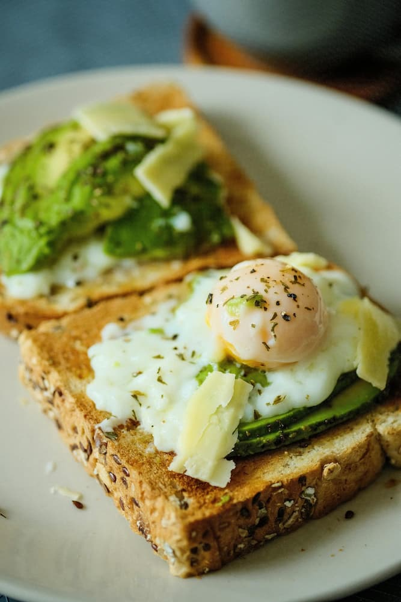

avocado-toast-poached-egg

Description
This avocado toast topped with a perfectly poached egg is a simple, wholesome breakfast or brunch option that’s full of healthy fats, protein, and flavor.
Ingredients
- 2 slices whole-grain bread
- 1 ripe avocado
- 2 large eggs
- 1 teaspoon lemon juice
- Salt and pepper to taste
- 1 tablespoon chopped fresh chives (optional)
- Red pepper flakes for garnish (optional)
Steps
- Toast the slices of bread until golden and crisp.
- Mash the avocado in a small bowl with lemon juice, salt, and pepper.
- Bring a pot of water to a gentle simmer, then poach the eggs for about 3–4 minutes until whites are set but yolks are still runny.
- Spread mashed avocado evenly over toasted bread. Top each slice with a poached egg.
- Garnish with chives and red pepper flakes if desired. Serve immediately.
Home